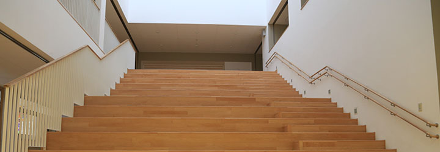

学園について

「ほそごう（細郷）」は中世から明治まで現在の伏尾台を含む細河地域を総称する名称として使われていた地名です。明治７（１８７４）年には、この地域初の学校として細郷小学校が開設されました。それから９０年近くの年月を経て、１９８０年代はじめに伏尾台小学校、細河中学校が相次いで開設されました。
いわば、「ほそごう」の名は、細河・伏尾台地域の学校のルーツとも言えましょう。そして、現在の教育課題の解決と子どもたちの豊かな育ちのために開校する新しい小中一貫校は、細郷地域の教育の原点を表す「ほそごう」を学園名として採用しました。
ほそごう学園がめざす教育：9年間一貫して子どもを育てる
これまでの細小・伏小・細中教育のよき伝統を継承しつつ、現在の教育課題を解決するために小中の教職員が協働して、９年間に渡り、子どもを指導・支援するための新たなステージで教育活動を行います。
学校教育目標
 確かな学力と豊かな人権感覚の育成を仲間とともに
確かな学力と豊かな人権感覚の育成を仲間とともに- 地域の特性を活かし、9年間の一貫した教育の中で、子どもたちに確かな学力と豊かな人権感覚を育て、仲間と協議し、自らの進路を切り拓く力を育成する。
めざす子ども像
- ① 学び合う喜びを感じ、自ら学ぶ子
- ② 生命を大切にし、人権尊重の社会をともに築く子
- ③ くらしを見つめ、自らの生き方を切り拓く子
- ④ 目標を持って、最後までやりきる子
- ⑤ 地域を愛し、地域とともに歩む子
重点教育課題
- 自分の人生をマネジメントする力の育成
- 自立への学びとして、「えがく力」と「自分を見つめる力」を育成する。協同への学びとして、「つながる力」と「深め合い・高める力」を育成する。